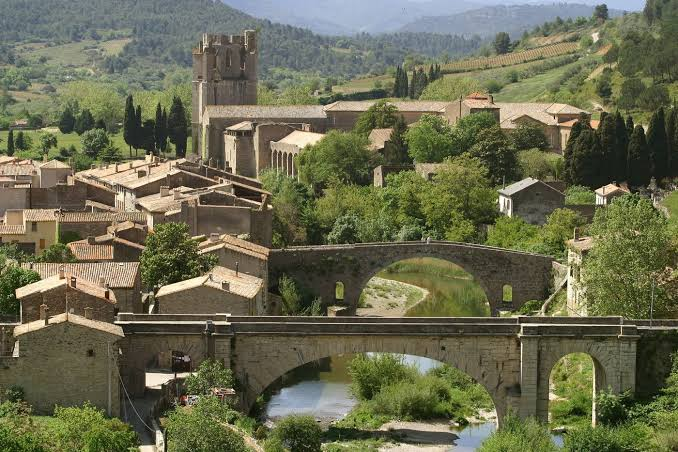

Abbaye de
Lagrasse


⟹ Édifices religieux & Patrimoine ⟸
Une fondation antérieure à Charlemagne. L’abbaye Sainte-Marie de Lagrasse, établie sur la rive de l’Orbieu au cœur des Corbières, compte parmi les plus anciens monastères du Languedoc. Ses origines exactes se perdent dans le haut Moyen Âge. La tradition fait remonter sa fondation aux VIIe-VIIIe siècles, mais son existence est solidement attestée à l’époque carolingienne. Le 19 janvier 779, une charte de Charlemagne confirme à l’abbé Nimfridius la protection impériale, des privilèges et la possession de biens : ce document exceptionnel place très tôt Lagrasse parmi les établissements religieux importants de la région.

L’essor carolingien et bénédictin. Placée sous la règle de saint Benoît, l’abbaye bénéficie de la faveur des souverains carolingiens et de nombreuses donations aristocratiques. Sa position entre la vallée de l’Aude, le littoral méditerranéen et les passages pyrénéens favorise son rayonnement. Autour du monastère se constitue progressivement un vaste réseau de terres, églises, prieurés et dépendances. L’abbaye participe à l’encadrement religieux des campagnes et à la mise en valeur du territoire.
Une des grandes puissances monastiques du Midi. Entre les XIe et XIIIe siècles, Lagrasse atteint son apogée. Ses possessions s’étendent dans le Languedoc, le Roussillon et au-delà des Pyrénées, jusqu’en Catalogne et en Aragon. Les revenus de ce patrimoine permettent de reconstruire et d’embellir le monastère. L’abbaye devient à la fois un centre spirituel, économique, politique et culturel. Le bourg de Lagrasse se développe face au monastère, sur l’autre rive de l’Orbieu, relié à lui par le pont qui structure durablement le paysage urbain.
La croisade contre les Albigeois. Au début du XIIIe siècle, Lagrasse se trouve au cœur des bouleversements provoqués par la croisade contre le catharisme. Grâce à son prestige et à ses relations avec les grandes familles méridionales, l’abbaye et ses abbés jouent à plusieurs reprises un rôle diplomatique et de médiation. L’établissement traverse les changements de pouvoir qui entraînent le recul des lignages seigneuriaux du Midi et l’affirmation progressive de la monarchie capétienne en Languedoc.
Reconstructions médiévales et palais abbatial. La prospérité se traduit par de grandes campagnes architecturales. Les parties romanes sont complétées ou transformées à l’époque gothique. Aux XIIIe-XIVe siècles, les abbés font édifier des espaces prestigieux, notamment un palais abbatial, des chapelles et des bâtiments destinés à affirmer leur rang. L’ensemble conserve ainsi des traces de plusieurs siècles de construction, du préroman au gothique puis aux réaménagements modernes.
Crises, commende et réformes. À la fin du Moyen Âge, guerres, épidémies et difficultés économiques fragilisent la communauté. Comme de nombreux monastères français, Lagrasse passe sous le régime de la commende à l’époque moderne : l’abbé peut être nommé de l’extérieur et ne réside pas toujours sur place. Les XVIIe et XVIIIe siècles sont cependant marqués par de nouvelles campagnes de travaux et par des tentatives de réforme de la discipline monastique. L’architecture conventuelle est adaptée aux usages et au goût du temps.
La Révolution et le partage de l’abbaye. En 1792, la communauté religieuse disparaît et le domaine est vendu comme bien national. Le vaste ensemble est divisé entre plusieurs propriétaires, séparation qui explique en partie son histoire contemporaine. Divers usages privés et agricoles se succèdent au XIXe siècle tandis que l’intérêt patrimonial pour les bâtiments médiévaux grandit et que des protections sont progressivement mises en place.
Deux propriétaires, un même monument. Depuis le début du XXIe siècle, l’abbaye présente une situation singulière. La partie médiévale dite « abbaye publique », comprenant notamment le palais abbatial et plusieurs espaces anciens, appartient au Département de l’Aude, qui mène restaurations, recherches et actions culturelles. La partie conventuelle est occupée depuis 2004 par les Chanoines réguliers de la Mère de Dieu, qui y ont rétabli une vie religieuse. Cette coexistence redonne au monument une double dimension patrimoniale et spirituelle.
Plus de douze siècles d’histoire. Lagrasse offre aujourd’hui une lecture exceptionnelle de l’histoire monastique méridionale : héritage carolingien, puissance bénédictine, art roman et gothique, crises de la fin du Moyen Âge, transformations modernes, rupture révolutionnaire et restaurations contemporaines. Le développement du village, aujourd’hui reconnu pour la qualité de son patrimoine, reste indissociable de celui de l’abbaye qui domine depuis plus de mille ans la vallée de l’Orbieu.
Une architecture sur plus d'un millénaire. La partie médiévale de Lagrasse conserve des éléments allant de l'époque carolingienne aux transformations modernes. La base d'une tour préromane constitue notamment un précieux témoin des premiers siècles du monastère, tandis que le palais abbatial rappelle les grands travaux conduits à la fin du XIIIe siècle sous l'abbé Auger de Gogenx.
Une abbaye fortifiée. Aux XIVe et XVe siècles, dans un contexte de guerres et d'épidémies, l'ensemble reçoit des dispositifs défensifs : contreforts, mâchicoulis et meurtrières. L'abbaye témoigne ainsi à la fois de la vie monastique et de l'insécurité qui marque la fin du Moyen Âge.
Deux ensembles depuis la Révolution. Après l'expulsion des religieux en 1792 et la vente comme bien national, les bâtiments sont divisés. Cette séparation subsiste : la partie médiévale appartient au Département de l'Aude et accueille le centre culturel Les arts de lire ; l'autre partie est occupée par les Chanoines réguliers de la Mère de Dieu.
Le site officiel propose aussi guides de visite, documents pédagogiques et ressources historiques téléchargeables.
Sources : Abbaye médiévale de Lagrasse — histoire et architecture · Ressources et documentationLe village de Lagrasse : ruelles médiévales, halle et pont vieux, classé Plus Beau Village de France.
La vallée de l'Orbieu : randonnées le long de la rivière, au cœur des Corbières.
Les vignobles des Corbières : nombreux domaines viticoles à découvrir aux alentours du village.
Carcassonne : à moins d'une heure, la Cité médiévale et ses remparts.